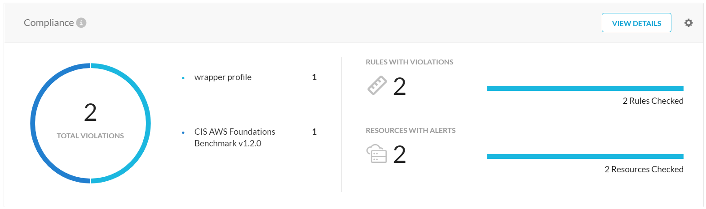
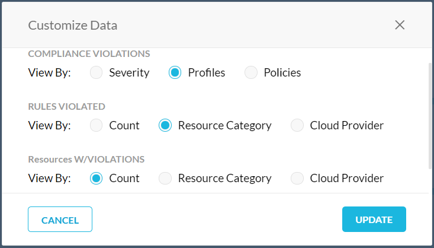
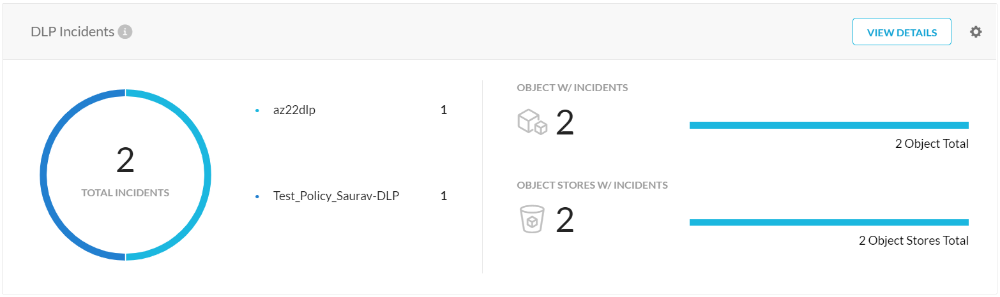

Overview
The Overview dashboard displays the total number of public cloud resources in your IaaS ecosystem, the total number of compliance rules violated, and open DLP incidents.
Filter by IaaS Provider
The Show dropdown menu on the Overview dashboard provides the list of IaaS providers. You can view the details of all your IaaS instances or choose a service provider from the list to filter the information displayed on the dashboard.
 |
Inventory
The Inventory widget displays the total number of AWS accounts, Azure Subscriptions, and GCP Projects in your public cloud. Additionally, you can view the summary of all your public cloud resources categorized by,
Compute
VPC
Storage - The total number of AWS S3 Buckets, Azure Blob Containers, and GCP Storage Buckets.
Databases
Security Groups
You can click View Details to view detailed information about your IaaS resources in the Inventory dashboard. For information on the Inventory dashboard, see Inventory.
Billable Resources Scanned
The View Usage button opens the Billable Resources Scanned window which displays the average number of resources that were scanned for security assessment within the selected time period.
You can select a time period or specify a date range using the Time dropdown list.
Depending on the selected time period, the average number of resources are calculated for the total number of hours that the resources are active. The example graph shows the number of days the AWS resources are active over a period of 7 days.
From the example graph, the average number of resources are calculated as follows:
AWS Resource Category | Total number of hours each resource was active | Average number of resources scanned | ||
|---|---|---|---|---|
AWS-ENG | AWS-SE | AWS-ITOps | ||
Compute | 5* 24 = 120 | 2.75* 24 = 66 | 3 * 24 = 72 | ceil{(120 + 66 + 72)/(7 * 24)} = 2 |
Storage | 6 * 24 = 144 | 4 * 24 = 96 | 2 * 24 = 48 | ceil{(144 + 96 + 48)/(7 * 24)} = 2 |
Database | 0.5 * 24 = 12 | 1 * 24 = 24 | 4 * 24 = 96 | ceil{(12 + 24 + 96)/(7 * 24)} = 1 |
Netskope counts the following resource categories and resources for each service provider as billable resources.
Resource Category | AWS | Azure | GCP |
|---|---|---|---|
Compute | EC2Instance | VirtualMachine | Instance |
Storage | S3Bucket | BlobContainer | Bucket |
Database | DynamoDBTable RDSInstance RedShiftCluster | SQLDatabase SQLServer | SqlInstance BigqueryDataset |
For a complete list of supported entities and attributes, see
Export to CSV
You can view detailed information about the scanned resources by clicking Download CSV  . The CSV provides information such as from and To scan time in GMT, tenant name, cloud provider, account name, account ID, number of Compute resources, number of Database resources, number of Storage resources, and total number of resources.
. The CSV provides information such as from and To scan time in GMT, tenant name, cloud provider, account name, account ID, number of Compute resources, number of Database resources, number of Storage resources, and total number of resources.
Compliance
The Compliance widget displays the total number of compliance rule violations along with the security assessment profiles that contain the compliance rules. The widget also shows the total number of rules and resources with violations.
|  |
You can customize the data displayed in the widget by clicking the gear icon. The Customize Data dialog box allows you to view the compliance violation by severity, profiles, or policies. The rules violated and resources with violations can be customized by count, resource category, or cloud provider. The Update button updates the Compliance widget with your customization.
|  |
You can click View Details to view detailed information about the compliance rule violations in the Compliance page. For information on the Compliance page, see Compliance.
DLP Incidents
The DLP widget displays the total number of DLP incidents as a result of DLP policy violations. The widget shows the DLP policy names, number of objects with incidents, and number of object stores with incidents.
|  |
You can customize the data displayed in the widget by clicking the gear icon. The Customize Data dialog box allows you to view the DLP incidents by policy, profile, or severity. The objects and object stores with incidents can be customized by count, permissions, or cloud provider. The Update button updates the DLP Incidents widget with your customization.
 |
You can click View Details to view detailed information about the incidents in the DLP Incidents page. For information on the DLP Incidents page, see DLP.
For a complete list of supported file categories and file types for DLP, see Supported File Categories and File Types.